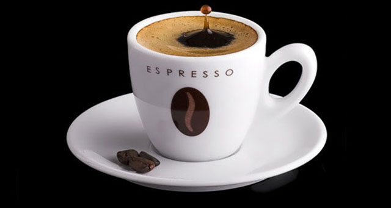

THE ART OF COFFEE
Strong. Rich. Timeless.

Espresso is a strong and concentrated coffee made by forcing hot water through finely-ground coffee beans under high pressure.
It has a rich aroma, bold flavor, and a smooth crema on top. Its taste can be strong, slightly bitter, and sometimes have notes of chocolate, nuts, or caramel.
Espresso originated in Italy and is the base for many popular coffee drinks such as Cappuccino, Latte, and Americano.